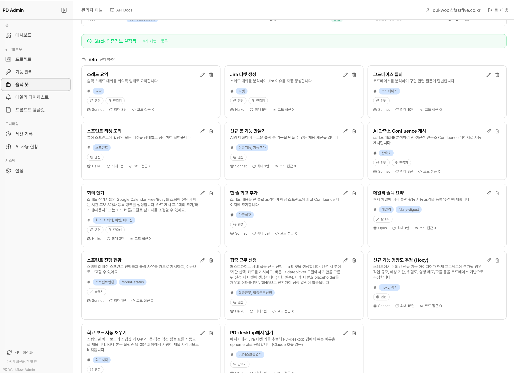

Career Case Study
Slack 봇 기능·워크플로우 실험 구조 설계
비개발 직군도 Slack 안에서 필요한 자동화 기능을 제안하고, AI가 커맨드 정의·핸들러·프롬프트 초안까지 이어갈 수 있도록 Socket Mode 기반 Slack 봇과 워크플로우 엔진을 연결했습니다.
Slack Socket Modecommands.jsonClaude Agent SDKWorkflow Router
문제 정의
반복 구현 부담
이벤트 처리, 핸들러, 권한, 프롬프트 파일을 매번 새로 연결해야 했습니다.
비개발자 접근성
좋은 업무 자동화 아이디어가 있어도 실제 Slack 봇 기능 초안까지 연결되기 어려웠습니다.
검증 흐름 부재
명령 생성 후 실행 조건과 컨텍스트 수집 방식이 일관되지 않아 운영 리스크가 있었습니다.
구현 구조
prompts/slack-bot/commands.json을 Slack 봇 명령어의 중앙 레지스트리로 두고, commandKey, aliases, triggerTypes, model, maxTurns, promptFile, outputMode 같은 설정을 명령별로 관리했습니다. 백엔드는 command-registry.ts에서 이 설정을 읽어 멘션·슬래시 커맨드·메시지 단축키 이벤트를 적절한 핸들러와 프롬프트로 라우팅합니다.
신규기능 명령은 별도 핸들러에서 slack-bot-dev 채팅 세션을 생성합니다. 팀원이 Slack에서 필요한 기능을 자연어로 설명하면 AI 채팅 인터페이스가 커맨드 정의, TypeScript 핸들러, 프롬프트 초안 생성을 돕고, 승인 후 PR 생성 흐름으로 이어지도록 구성했습니다.
스크린샷 갤러리
